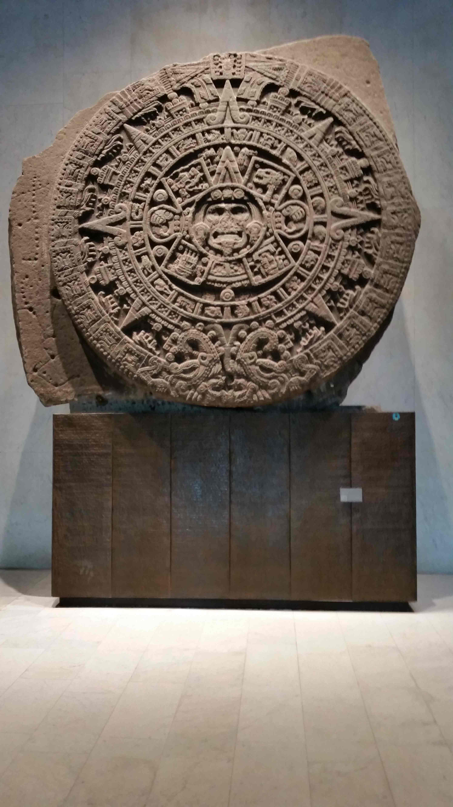

Mexiko

Im Febr-März 2016 in Mexiko, Besichtigung der Sonnen-Pyramide in Theothikuacan
In der heiligen Stadt Theothikuacan (45 km von Mexico-City) lebten bis 540 ca. 100000 Menschen bis es zu einer Klimakatastrophe kam, verursacht durch den 1400 km entfernten Vulkan Ilopango in Salvador. 10 Jahre Kälte und Dürre ließen die Menschen an ihren Göttern zweifeln, sie brannten alles nieder und verließen die Stadt. Dieser Vulkanausbruch in Südamerika war auch in Europa zu spüren, Pestepidemien, Hungersnöte und Untergang des römischen Reiches waren die Folge.
Museum, Stein der Sonne
Der Stein der Sonne oder Sonnenstein (spanisch Piedra del Sol), oft irrtümlich aztekischer Kalender-Stein genannt, ist eine große monolithische Skulptur aus dem Bereich des alten Haupttempels von Tenochtitlán (Mexiko-Stadt). Die Skulptur aus Basalt misst ungefähr 3,6 Meter im Durchmesser und ist 1,22 Meter dick. Das Gewicht beträgt 24 Tonnen. Der Stein wurde bei Planierungsarbeiten am 17. Dezember 1790 auf dem Platz südlich der Kathedrale entdeckt und auf Anordnung des Vizekönigs am Fuß des Westturms der Kathedrale angebracht. Der Stein wurde, wohl wegen seiner Position am Kirchturm, volkstümlich Reloj de Montezuma (Montezumas Uhr) genannt. Seit 1885 befindet er sich im Nationalmuseum für Anthropologie und Geschichte und nimmt in dessen Neubau im Chapultepec-Park in Mexiko die zentrale Position des Azteken-Saales ein.